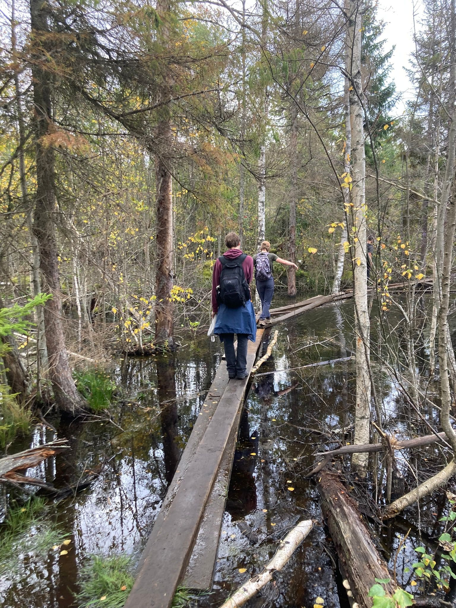

Femte veckan
...oder die erste Woche, in der ich nicht dazu komme, hier zu schreiben. Es passiert natürlich trotzdem einiges.. oder gerade deswegen.
Ich mache ein paar Stichpunkte um zu behalten was passiert ist:
- Kürbis-Gnocci mit Andrea, Arianna & Alberto
- Stockholm Run Club mit David
- Royal Banquet mit Linda, Berta, Caroline, Arianna, Fien & Priscilla
- Kochen mit Myra
- Wandern in Tyresta mit Antonio, Max, David & Adrien
Frauenfußball-Derby im Stadion.
Royal Banquet

Nationalpark Tyresta.
Am Bahnhof nach der Rückkehr von der Wanderung.
Wo habe ich hier mein Fahrrad abgestellt...?.